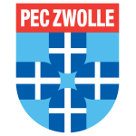

AI置信度:低
✘
兹沃勒 vs 坎布尔

兹沃勒0-1
(0-0)
坎布尔
赛前情报速览
| 项目 | 内容 | 项目 | 内容 |
|---|---|---|---|
| 赛事 | 荷甲 | 编号 | 周日009 |
| 比赛日 | 2026-10-11 | 开球时间 | 待定 |
| AI 置信度 | 低 | 冷启动 | 否 |
| 结论模型 | 量化推演引擎 | 数据样本 | 主 9 场 / 客 10 场 |
核心数据对比
| 数据维度 | 兹沃勒 | 坎布尔 |
|---|---|---|
| 期望进球（模型） | 1.533 | 1.306 |
| 统计样本（场） | 9 | 10 |
历史交锋
两队在本站收录期内暂无交手记录，数据积累后自动展示。
近期战绩
兹沃勒 近期
负
| 日期 | 赛事 | 对手 | 比分 | 半全场 | 结果 |
|---|---|---|---|---|---|
| 2026-09-18 | 荷甲 | 客 格罗宁根 | 3-0 | 主/主 | 负 |
伤停与缺阵
伤停数据源尚未接入，框架已预留，数据补齐后自动展示。
裁判执法数据
裁判执法数据源尚未接入，框架已预留，数据补齐后自动展示。
市场数据
兹沃勒 胜
1.84
平
3.7
坎布尔 胜
3.17
| 市场 | 兹沃勒 | 平 | 坎布尔 |
|---|---|---|---|
| 胜平负 | 1.84 | 3.7 | 3.17 |
| 去水概率 | 48.1% | 23.9% | 27.9% |
让球
让球
主让 1
结论
让球负
模型视角
模型预期总进球合计：2.838 球
冷门评估：高（冷门概率 58.6%）
综合赛果推演
方向
主胜
38.0%
次选 平 33.0%
比分
1-1
14.6%
次选 2-2 9.8%
进球
3 球
14.8%
次选 2 球 14.6%
半全场
平/客
实际赛果
战力对照
六维战力 / 动量曲线数据源尚未接入，框架已预留，数据补齐后自动展示。
留档核验
结论指纹
生成于 2026-10-22T18:31:17+08:00
结论指纹
91dc6b2d3360 （仅覆盖赛前结论，赛后回填不改变该值）生成于 2026-10-22T18:31:17+08:00
赛后回填：半场 0-0 · 全场 0-1 方向 未中 比分 未中 进球 未中
结算于 2026-10-11